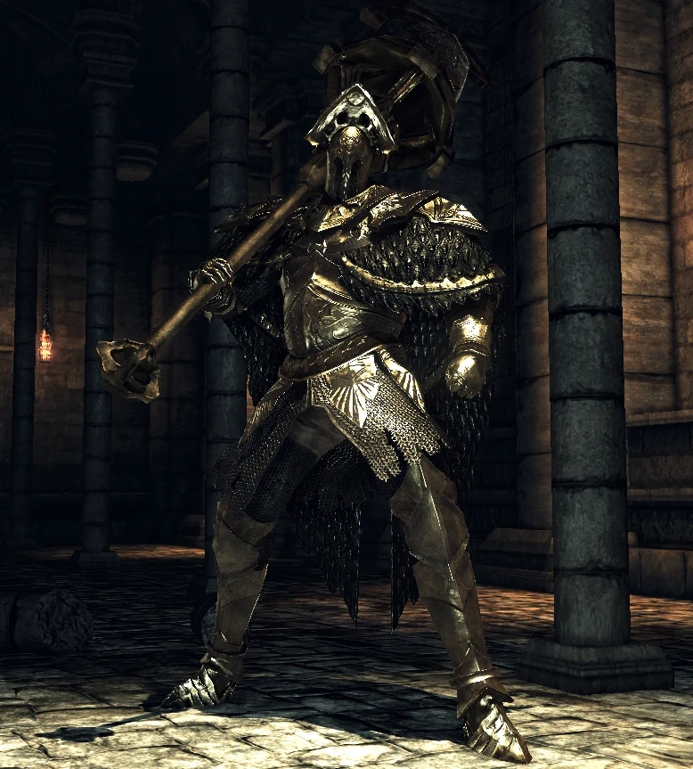

Ruin Sentinals
One boss that, while optional, is one of the biggest challenges for first-time players of Dark Souls 2 is the Ruin Sentinals. The main feature of this boss is what the name implies, there's more than one at a time. This means you have to avoid not one, not two, but three Sentinals at the same time. This battle is a real challenge for most novice players as it is a complete turn around from the usual one-on-one battles you usually have and instead, focuses on your ability to control the room and find openings in all of the chaos. Most players do not defeat these guys on their first, second, or even tenth try, as it requires you time your attack and your dodges to not get caught in the middle of an action. However, these bosses are very weak to lighting attacks, so if you do end up encountering them, make sure to have your pine resin on hand. Fortunately, This boss is completely optional and only the adventurous types of players are likely to encounter these foes.
Velstadt, The Royal Aegis
Velstadt, The Royal Aegis is another boss that is located way later in the game. He serves as the second-to-final boss in the Undead Crypt. Velstadt is another wall that players may struggle against as he has a very long line of reach with his hammer, and can also chain attacks that can stunlock your character. Accurate timing and perfect parrying can really help you overcome his onslaught of attacks. However, the fight doesn't end there. The unique thing about this boss is that when his health reaches 50%, he begins to use new attacks. His most dangerous are his Dark Burst and Dark Ord attacks, both of which can one-shot you if you're unlucky. Fortunately, these attacks leave him open and staying close to him decreases the chance of him using these attacks. Dodging his hammer strikes are tricky, but leave him wide open if successful. Another key strategy to use is lighting and faith based builds, as Velstadt is very weak to both of these elements, combining these elements and timing your dodges and strikes are key to taking down this boss.
Throne Watcher and Throne Defender
The Throne Watcher and Defender is a duo of bosses that, like the Ruin Sentinals, you have to fight at the same time. However, this duo is more powerful because they have two very different styles of attack. The Throne Defender is larger and uses slower but stronger attacks. The Throne Watcher is smaller and more fragile, but moves at incredibly fast speeds. The combined efforts of these bosses can quickly overpowerer inexperienced players, so try to seperate and pick off one of them when you have the chance. Another thing to watch out for is when eithe rof these bosses gets to 50% health, they briefly enchant their weapons with lighning and magic. This means that players must be on guard when they reach half health or they're in for a swift defeat. Finally, the most important thing to remember for this fight is that you have to defeat both bosses within 20 seconds of each other. Any longer than that, will cause the one you just defeated to revive at full health! So wear down both enemies to low health and then go for a swift finish to ensure your victory.